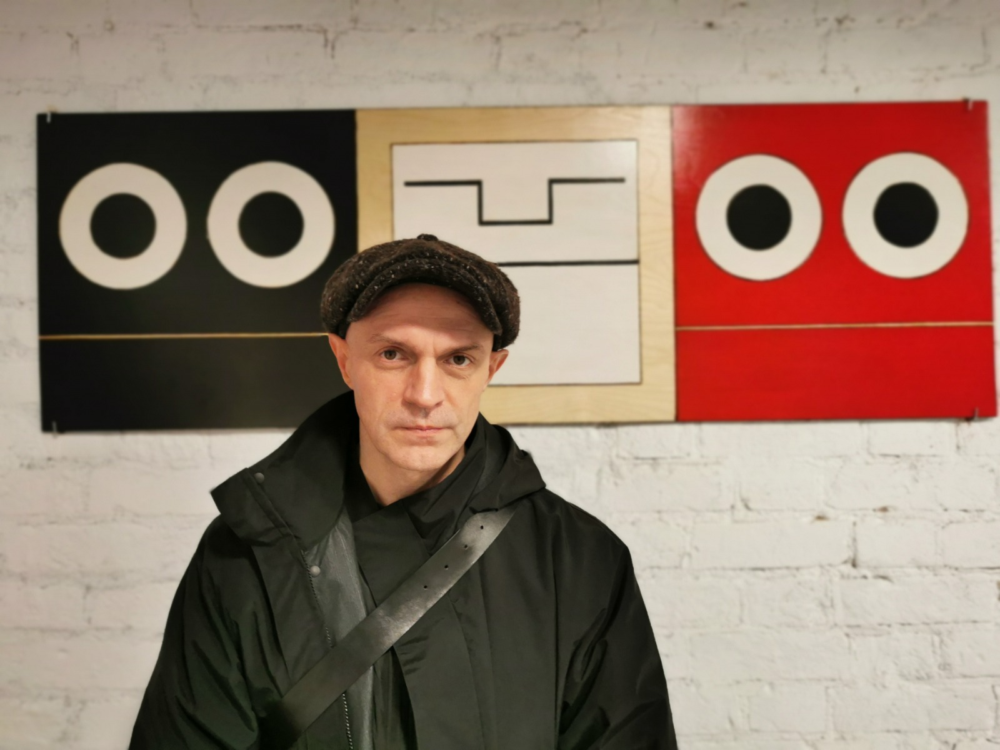
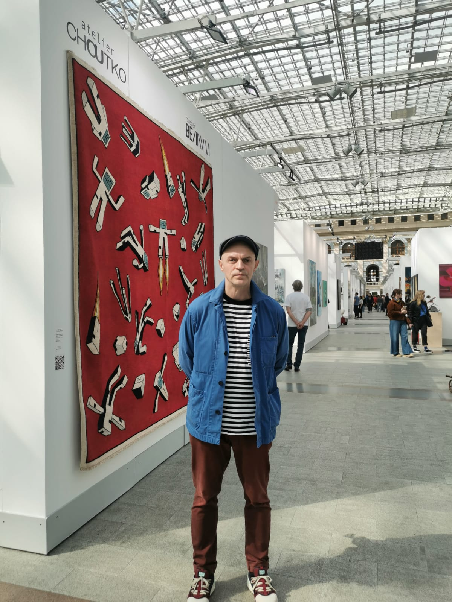
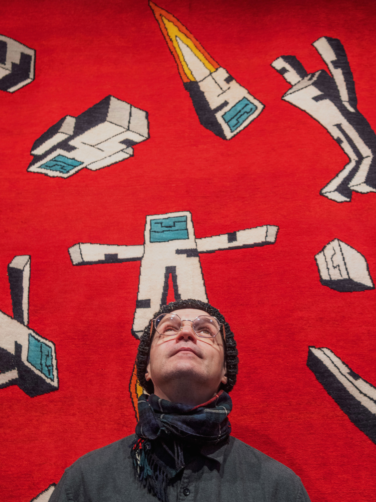
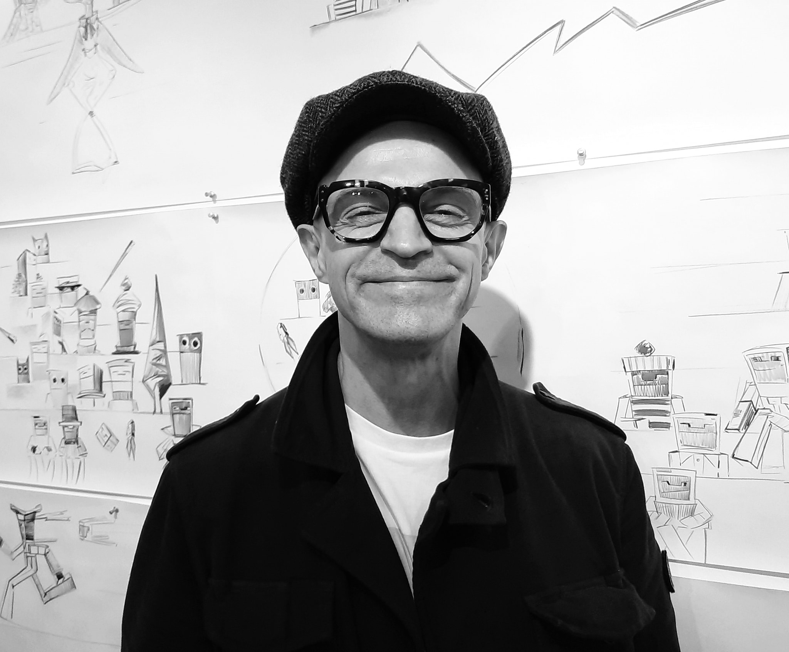

About




Кирилл Рубцов родился в Москве в 1971г. В 1999 окончил МГХПУ им. Гр. С. Г. Строганова. Ключевой темой творчества автора является «Робот» из берёзового полена…. Работы выполнены в смешанной технике пирографии на фанере.
Kirill Rubtsov was born in Moscow in 1971. In 1999 he graduated from the Moscow State Art and Industry University. gr. S. G. Stroganova The key theme of the author's work is "Robot" made of birch logs.... The works are made in mixed technique of pyrography on plywood.
EMAIL: russkirobot@yandex.ru